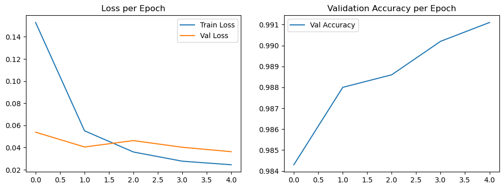
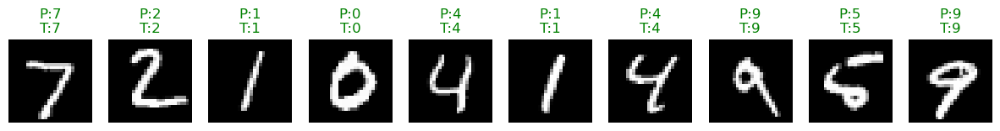

Laboratory Task 6#
DS413 | Deep Learning#
Training CNN Model using MNIST Dataset#
The activity requires you to translate the specifications (layers, kernel sizes, strides, padding, number of filters, and output dimensions) shown in the diagram into a PyTorch nn.Module class definition.
Laboratory Task 6

# Libraries
import torch
import torch.nn as nn
import torch.nn.functional as F
class CNNModel(nn.Module):
def __init__(self):
super(CNNModel, self).__init__()
# Convolutional Layers
self.conv1 = nn.Conv2d(in_channels=1, out_channels=32, kernel_size=3, stride=1, padding=1)
self.pool1 = nn.MaxPool2d(kernel_size=2, stride=2, padding=1)
self.conv2 = nn.Conv2d(in_channels=32, out_channels=64, kernel_size=3, stride=1, padding=1)
self.conv3 = nn.Conv2d(in_channels=64, out_channels=128, kernel_size=3, stride=1, padding=1)
self.conv4 = nn.Conv2d(in_channels=128, out_channels=256, kernel_size=3, stride=1, padding=1)
self.pool2 = nn.MaxPool2d(kernel_size=2, stride=2, padding=0)
# Dropout
self.dropout = nn.Dropout(p=0.2)
# Fully Connected Layers
# Need to compute input features to FC1 after flattening
self.fc1 = nn.Linear(256 * 7 * 7, 1000) # 28x28 should shrink to 7x7 after pooling
self.fc2 = nn.Linear(1000, 500)
self.fc3 = nn.Linear(500, 10) # 10 classes
def forward(self, x):
# Conv + ReLU + Pooling
x = F.relu(self.conv1(x))
x = self.pool1(x)
x = F.relu(self.conv2(x))
x = F.relu(self.conv3(x))
x = F.relu(self.conv4(x))
x = self.pool2(x)
# Dropout
x = self.dropout(x)
# Flatten
x = x.view(x.size(0), -1)
# Fully connected + ReLU
x = F.relu(self.fc1(x))
x = F.relu(self.fc2(x))
x = self.fc3(x)
# Softmax - applied in loss function dapat
return x
model = CNNModel()
x = torch.randn(1, 1, 28, 28) # batch of 1, grayscale 28x28
print(model(x).shape) # expected: [1, 10]
torch.Size([1, 10])
Implementing a CNN within a comprehensive PyTorch training workflow.#
# Libraries
import torch.optim as optim
from torch.utils.data import DataLoader, random_split
from torchvision import datasets, transforms
import matplotlib.pyplot as plt
import numpy as np
import random
# Set seed
def set_seed(seed=143):
torch.manual_seed(seed)
np.random.seed(seed)
random.seed(seed)
set_seed(143)
# Load MNIST dataset
transform = transforms.ToTensor()
train_data = datasets.MNIST(root="data", train=True, download=True, transform=transform)
test_data = datasets.MNIST(root="data", train=False, download=True, transform=transform)
train_set, val_set = random_split(train_data, [50000, 10000])
# Data loaders:
batch_size = 64
train_loader = DataLoader(train_set, batch_size=batch_size, shuffle=True)
val_loader = DataLoader(val_set, batch_size=batch_size, shuffle=False)
test_loader = DataLoader(test_data, batch_size=batch_size, shuffle=False)
# Define CNN Model
class CNNModel(nn.Module):
def __init__(self):
super(CNNModel, self).__init__()
self.conv1 = nn.Conv2d(1, 32, kernel_size=3, stride=1, padding=1)
self.pool1 = nn.MaxPool2d(2, 2, padding=1)
self.conv2 = nn.Conv2d(32, 64, kernel_size=3, stride=1, padding=1)
self.conv3 = nn.Conv2d(64, 128, kernel_size=3, stride=1, padding=1)
self.conv4 = nn.Conv2d(128, 256, kernel_size=3, stride=1, padding=1)
self.pool2 = nn.MaxPool2d(2, 2)
self.dropout = nn.Dropout(0.2)
self.fc1 = nn.Linear(256 * 7 * 7, 1000)
self.fc2 = nn.Linear(1000, 500)
self.fc3 = nn.Linear(500, 10)
def forward(self, x):
x = F.relu(self.conv1(x))
x = self.pool1(x)
x = F.relu(self.conv2(x))
x = F.relu(self.conv3(x))
x = F.relu(self.conv4(x))
x = self.pool2(x)
x = self.dropout(x)
x = x.view(x.size(0), -1) # flatten
x = F.relu(self.fc1(x))
x = F.relu(self.fc2(x))
x = self.fc3(x)
return x
# Training
device = torch.device("cuda" if torch.cuda.is_available() else "cpu")
model = CNNModel().to(device)
criterion = nn.CrossEntropyLoss() # loss for classification
optimizer = optim.Adam(model.parameters(), lr=0.001)
# Training Loop
def train_model(model, train_loader, val_loader, criterion, optimizer, epochs=5):
train_losses, val_losses, val_accs = [], [], []
for epoch in range(epochs):
# ---- Training ----
model.train()
running_loss = 0
for images, labels in train_loader:
images, labels = images.to(device), labels.to(device)
optimizer.zero_grad()
outputs = model(images)
loss = criterion(outputs, labels)
loss.backward()
optimizer.step()
running_loss += loss.item()
avg_train_loss = running_loss / len(train_loader)
# ---- Validation ----
model.eval()
val_loss, correct = 0, 0
with torch.no_grad():
for images, labels in val_loader:
images, labels = images.to(device), labels.to(device)
outputs = model(images)
loss = criterion(outputs, labels)
val_loss += loss.item()
preds = torch.argmax(outputs, dim=1)
correct += (preds == labels).sum().item()
avg_val_loss = val_loss / len(val_loader)
accuracy = correct / len(val_loader.dataset)
train_losses.append(avg_train_loss)
val_losses.append(avg_val_loss)
val_accs.append(accuracy)
print(f"Epoch [{epoch+1}/{epochs}] "
f"Training Loss: {avg_train_loss:.4f} "
f"Validation Loss: {avg_val_loss:.4f} "
f"Validation Accuracy: {accuracy:.4f}")
return train_losses, val_losses, val_accs
# Training Loop (Execute)
train_losses, val_losses, val_accs = train_model(model, train_loader, val_loader, criterion, optimizer, epochs=5)
Epoch [1/5] Training Loss: 0.1529 Validation Loss: 0.0539 Validation Accuracy: 0.9843
Epoch [2/5] Training Loss: 0.0551 Validation Loss: 0.0405 Validation Accuracy: 0.9880
Epoch [3/5] Training Loss: 0.0360 Validation Loss: 0.0463 Validation Accuracy: 0.9886
Epoch [4/5] Training Loss: 0.0277 Validation Loss: 0.0402 Validation Accuracy: 0.9902
Epoch [5/5] Training Loss: 0.0245 Validation Loss: 0.0363 Validation Accuracy: 0.9911

plt.figure(figsize=(12,4))
# Loss plot
plt.subplot(1,2,1)
plt.plot(train_losses, label="Train Loss")
plt.plot(val_losses, label="Val Loss")
plt.legend()
plt.title("Loss per Epoch")
# Accuracy plot
plt.subplot(1,2,2)
plt.plot(val_accs, label="Val Accuracy")
plt.legend()
plt.title("Validation Accuracy per Epoch")
plt.show()

Loss per Epoch#
Validation Accuracy per Epoch#
Overall Inference#
# Test Model Accuracy
model.eval()
correct = 0
with torch.no_grad():
for images, labels in test_loader:
images, labels = images.to(device), labels.to(device)
outputs = model(images)
preds = torch.argmax(outputs, dim=1)
correct += (preds == labels).sum().item()
test_acc = correct / len(test_loader.dataset)
print(f"Test Accuracy: {test_acc:.4f}")
Test Accuracy: 0.9913
Test Accuracy#
Overall Picture#
Takeaway#
From this activity, we saw how even a simple neural network can hit really high accuracy on the MNIST dataset. The training and validation losses both dropped nicely over the epochs, while the validation accuracy steadily climbed, which tells us the model was learning effectively without running into serious overfitting. By the end, the test accuracy of 99.09% showed that the model isn’t just memorizing the training data, but can actually generalize really well.
The main lesson here is that tracking metrics like loss and accuracy is more than just checking numbers—it gives us a clear picture of how the model is improving and whether it’s heading in the right direction. In this case, the model was already doing great after just five epochs, which also reminds us that more training doesn’t always mean better results.
In short, this task showed us both the power of neural networks for image classification and the importance of reading the training curves to understand what’s really going on under the hood.
Visualizing Model Prediction#
# Credits to: Chris Jallaine Mugot for this code.
def show_predictions(model, loader, n=10):
model.eval()
images, labels = next(iter(loader)) # take one batch
images, labels = images.to(device), labels.to(device)
with torch.no_grad():
outputs = model(images)
preds = torch.argmax(outputs, dim=1)
# Move to CPU for plotting
images = images.cpu()
preds = preds.cpu()
labels = labels.cpu()
fig, axs = plt.subplots(1, n, figsize=(15, 2))
for i in range(n):
axs[i].imshow(images[i][0], cmap="gray")
axs[i].axis("off")
axs[i].set_title(f"P:{preds[i].item()}\nT:{labels[i].item()}",
color=("green" if preds[i]==labels[i] else "red"))
plt.show()
show_predictions(model, test_loader, n=10)
